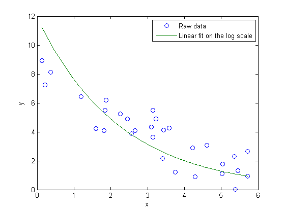
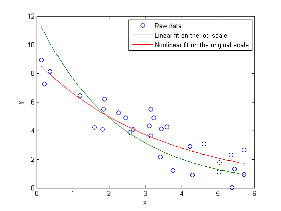
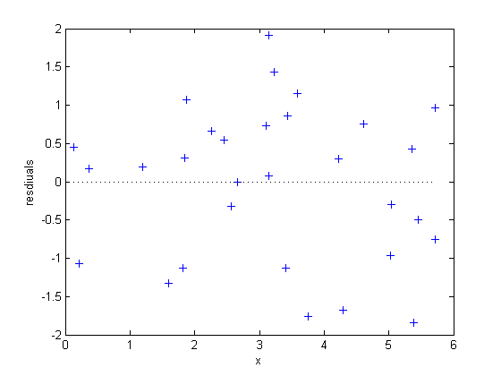
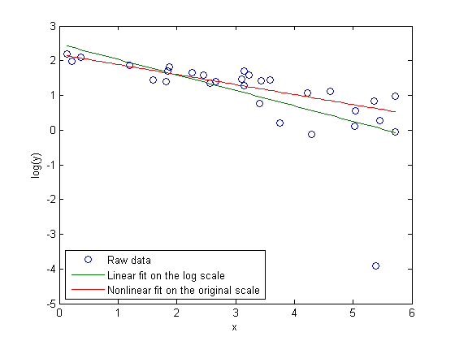
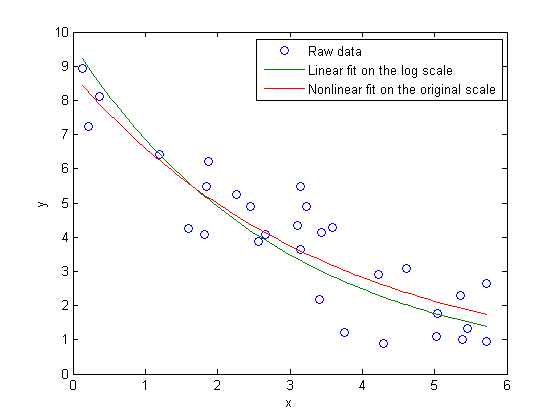

線形性への変換による非線形モデルの近似の注意点
2 つの変数 x と y で測定値を収集し、y を x の関数としてモデル化する場合を考えます。x は正確に測定されましたが、y の測定には、加法的誤差、対称誤差、ゼロ平均誤差の影響があるとします。
x = [5.72 4.22 5.72 3.59 5.04 2.66 5.02 3.11 0.13 2.26 ... 5.39 2.57 1.20 1.82 3.23 5.46 3.15 1.84 0.21 4.29 ... 4.61 0.36 3.76 1.59 1.87 3.14 2.45 5.36 3.44 3.41]'; y = [2.66 2.91 0.94 4.28 1.76 4.08 1.11 4.33 8.94 5.25 ... 0.02 3.88 6.43 4.08 4.90 1.33 3.63 5.49 7.23 0.88 ... 3.08 8.12 1.22 4.24 6.21 5.48 4.89 2.30 4.13 2.17]';
さらに、理論的には、これらのデータは指数関数的減退 y = p1*exp(p2*x) のモデルに従うはずです。この場合、p1 は正、p2 は負です。このモデルを近似するには、非線形最小二乗を使用できます。
modelFun = @(p,x) p(1)*exp(p(2)*x);
しかし、両側で対数を取り、log(y) = log(p1) + p2*x を取得することで、非線形モデルを線形モデルに変換することもできます。この線形モデルは、普通の線形最小二乗によって近似できるので、この方法には魅力があります。線形最小二乗から得る係数は log(p1) および p2 です。
paramEstsLin = [ones(size(x)), x] \ log(y); paramEstsLin(1) = exp(paramEstsLin(1))
paramEstsLin = 11.9312 -0.4462
結果はどうでしたか? データに近似を重ねることで、それを確認できます。
xx = linspace(min(x), max(x)); yyLin = modelFun(paramEstsLin, xx); plot(x,y,'o', xx,yyLin,'-'); xlabel('x');ylabel('y'); legend({'Raw data','Linear fit on the log scale'},'location','NE');
近似が生データにある傾向に従っていないことから、何か間違っていることがわかります。代わりに nlinfit を使用して非線形最小二乗を行った場合、どのような近似になるでしょうか?前の近似は、最適な近似ではありませんが、ラフな開始点として使用します。
paramEsts = nlinfit(x, y, modelFun, paramEstsLin)
paramEsts =
8.8145
-0.2885
yy = modelFun(paramEsts,xx); plot(x,y,'o', xx,yyLin,'-', xx,yy,'-'); xlabel('x');ylabel('y'); legend({'Raw data','Linear fit on the log scale', 'Nonlinear fit on the original scale'},'location','NE');
nlinfit を使用した近似は分散したデータ点のおおよその中心を通ります。残差プロットは、一様に分散したゼロのようなものを示します。
r = y-modelFun(paramEsts,x); plot(x,r,'+', [min(x) max(x)],[0 0],'k:'); xlabel('x'); ylabel('resdiuals');
では、線形近似のどこで問題が発生したのでしょうか?問題は対数変換にあります。データと 2 つの近似を対数スケールにプロットすると、極端な外れ値があることがわかります。
plot(x,log(y),'o', xx,log(yyLin),'-', xx,log(yy),'-'); xlabel('x'); ylabel('log(y)'); ylim([-5,3]); legend({'Raw data', 'Linear fit on the log scale','Nonlinear fit on the original scale'},'location','SW');
オリジナル データではこの観測は外れ値ではありません。対数スケールで外れ値になったのはなぜでしょうか?対数変換は、トレンド ラインをまっすぐにするために必要です。しかし、対数は非常に非線形の変換であるため、オリジナル スケールでの対称測定誤差が対数スケールで非対称になりました。外れ値には、オリジナル スケールでは最小の y 値 (0 に近い値) があったことに注目してください。対数変換はその最小の y 値をその近隣の値よりも "拡張" しました。対数スケールでは線形近似を行ったため、外れ値への影響が大きくなりました。
その 1 点における測定が若干異なっていれば、2 つの近似はよく似たものになっていた可能性があります。たとえば、
y(11) = 1; paramEsts = nlinfit(x, y, modelFun, [10;-.3])
paramEsts =
8.7618
-0.2833
paramEstsLin = [ones(size(x)), x] \ log(y); paramEstsLin(1) = exp(paramEstsLin(1))
paramEstsLin =
9.6357
-0.3394
yy = modelFun(paramEsts,xx); yyLin = modelFun(paramEstsLin, xx); plot(x,y,'o', xx,yyLin,'-', xx,yy,'-'); xlabel('x');ylabel('y'); legend({'Raw data','Linear fit on the log scale', 'Nonlinear fit on the original scale'},'location','NE');
2 つの近似は依然として異なります。どちらが "正しい" のでしょうか? これに答えるためには、y の測定が加法的測定誤差ではなく、乗法的誤差による影響を受けたとします。これらの誤差は対称ではなく、オリジナル スケールの最小二乗も適切ではありません。一方、対数変換は対数スケールで誤差を対称にし、そのスケールでは線形最小二乗近似が適しています。
そのため、どちらの方法が "正しい" かは、データに対する仮定によって異なります。実際には、傾向に比べて雑音項が小さい場合、同じ x 値の近くの y 値は非対称的にはあまり拡張されないため、対数変換は "ローカルに線形" です。その場合、2 つの方法は基本的に同じ近似になります。しかし、雑音項が小さくない場合は、どのような仮定が現実的であるかを考えて、適切な近似法を使用してください。